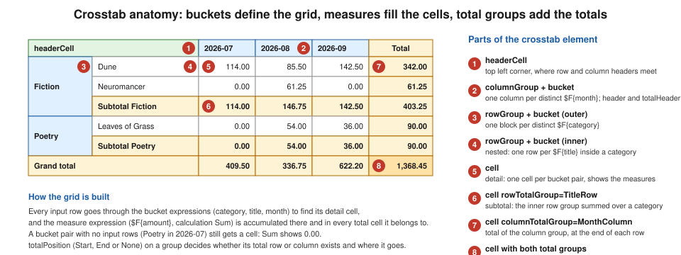

Crosstabs
|
This content was generated with the assistance of AI and should be verified against the official documentation before being relied on in production. |
Baseline date: 2026-10-09. A grouped report prints one row per record. A manager of the Bookshelf Billing service,
however, wants to see revenue by category and by month at the same time: categories down the left side, months across
the top and the amount in every cell, with totals on both axes. That is a pivot table, and in JasperReports it is the
crosstab element. The fill engine reads the records of a dataset, finds for each record the row and the column it belongs
to (the buckets), accumulates one or more measures in the cell where the two meet and in the total cells around it, and
then prints the resulting grid. The number of rows and columns is not known when the template is designed: it follows the
distinct values found in the data.
This page explains the parts of a crosstab, builds the Bookshelf Billing revenue grid, and then covers buckets and their
ordering, measures and percentages, totals, alternate row colours, dataset runs and parameters, and page breaks. The
examples were compiled and run with Java 21 and JasperReports 7.0.8, and the PDFs were checked by extracting their text and
by looking at the rendered pages. All templates use the v7 JRXML format (<element kind="...">, no namespace). Bands
and elements are covered in JRXML Report Design, datasets in
Subreports, Datasets, Tables & Lists
and styles in
Styles, Templates & Markup.
Anatomy of a crosstab
The figure labels the pieces of a crosstab that has two nested row groups (category, then title), one column group (month) and one measure (revenue).

| Part | What it is |
|---|---|
|
Where the records come from: the main dataset of the report by default, or a sub dataset through a |
|
An axis. Any number of groups can be declared and they nest in declaration order: the first row group encloses the second,
and so on. A row group has a |
|
Inside a group: the |
|
The cell contents printed for each bucket value and for the group total. |
|
A value accumulated in the cells, declared like a report variable: expression, class, |
|
The contents of a grid cell. A |
|
The top left corner; a title above the column headers; the contents printed instead of the crosstab when the dataset has no records. |
|
A value passed from the enclosing report into the crosstab, readable as |
The crosstab calculation engine works by iterating the records of the dataset, so its cost grows with the number of records
and its memory with the number of distinct bucket values. The configuration property
net.sf.jasperreports.crosstab.bucket.measure.limit limits the number of buckets to avoid out of memory errors; its
default is 0, which the configuration reference documents as no limit, and it was not exercised for this page. When the
database can do the aggregation, a GROUP BY query that returns one record per cell is cheaper than shipping every
record to the crosstab. The crosstab is nevertheless an in-memory pivot over a dataset, not an OLAP engine: the
Mondrian/XMLA data sources that older books present next to crosstabs are retired (finding O24, see
Data Sources & Query Executers).
Maven dependencies and data
The crosstab element is part of the core jasperreports artifact. The four dependencies used throughout this section
(explained in Getting Started with Spring Boot) are
enough for every example here.
<dependencies>
<dependency>
<groupId>net.sf.jasperreports</groupId>
<artifactId>jasperreports</artifactId>
<version>7.0.8</version>
</dependency>
<dependency>
<groupId>net.sf.jasperreports</groupId>
<artifactId>jasperreports-pdf</artifactId>
<version>7.0.8</version>
</dependency>
<dependency>
<groupId>net.sf.jasperreports</groupId>
<artifactId>jasperreports-fonts</artifactId>
<version>7.0.8</version>
</dependency>
<dependency>
<groupId>net.sf.jasperreports</groupId>
<artifactId>jasperreports-jdt</artifactId>
<version>7.0.8</version>
</dependency>
</dependencies>The records are the lines of invoices flattened to one record per book sold. They are plain Java beans with getters,
because the bean data source reads properties through getters: a Java record fails with an
Error retrieving field value from bean message with 7.0.8, so the class below is an ordinary class (the workarounds are in
Generating Reports from Databases & Services).
package bookshelf;
import java.math.BigDecimal;
public class SaleLine {
private final String category;
private final String month;
private final String title;
private final BigDecimal amount;
public SaleLine(String category, String month, String title, BigDecimal amount) {
this.category = category;
this.month = month;
this.title = title;
this.amount = amount;
}
public String getCategory() {
return category;
}
public String getMonth() {
return month;
}
public String getTitle() {
return title;
}
public BigDecimal getAmount() {
return amount;
}
}package bookshelf;
import java.math.BigDecimal;
import java.util.List;
public final class SalesSample {
private SalesSample() {
}
public static List<SaleLine> lines() {
return List.of(
new SaleLine("Fiction", "2026-07", "Dune", new BigDecimal("114.00")),
new SaleLine("Fiction", "2026-08", "Neuromancer", new BigDecimal("61.25")),
new SaleLine("Fiction", "2026-08", "Dune", new BigDecimal("85.50")),
new SaleLine("Fiction", "2026-09", "Dune", new BigDecimal("142.50")),
new SaleLine("Software", "2026-07", "The Pragmatic Programmer", new BigDecimal("199.50")),
new SaleLine("Software", "2026-08", "Clean Architecture", new BigDecimal("136.00")),
new SaleLine("Software", "2026-09", "Clean Architecture", new BigDecimal("204.00")),
new SaleLine("Software", "2026-09", "The Pragmatic Programmer", new BigDecimal("119.70")),
new SaleLine("Science", "2026-07", "Cosmos", new BigDecimal("96.00")),
new SaleLine("Science", "2026-09", "Cosmos", new BigDecimal("120.00")),
new SaleLine("Poetry", "2026-08", "Leaves of Grass", new BigDecimal("54.00")),
new SaleLine("Poetry", "2026-09", "Leaves of Grass", new BigDecimal("36.00")));
}
}Poetry has no sales in 2026-07 on purpose: it shows what a crosstab prints for a pair of buckets without records.
A first crosstab
The first template reads the main data source of the report and puts the crosstab in the summary band. In v7 JRXML
the title and summary bands are children of the report element directly, without a wrapping band element, and the
crosstab is an <element kind="crosstab">. The template is saved as src/main/resources/monthly-sales-crosstab.jrxml.
<?xml version="1.0" encoding="UTF-8"?>
<jasperReport name="monthly-sales-crosstab" language="java" pageWidth="595" pageHeight="842"
columnWidth="515" leftMargin="40" rightMargin="40" topMargin="40" bottomMargin="40"
whenNoDataType="AllSectionsNoDetail">
<style name="Zebra" mode="Opaque">
<conditionalStyle backcolor="#F0F0F0">
<conditionExpression><![CDATA[$V{IS_EVEN_ROW}]]></conditionExpression>
</conditionalStyle>
</style>
<field name="category" class="java.lang.String"/>
<field name="month" class="java.lang.String"/>
<field name="amount" class="java.math.BigDecimal"/>
<title height="40">
<element kind="staticText" x="0" y="0" width="515" height="24" fontSize="16.0" bold="true">
<text><![CDATA[Bookshelf Billing: revenue by category and month]]></text>
</element>
</title>
<summary height="200">
<element kind="crosstab" x="0" y="0" width="515" height="200">
<dataset/>
<headerCell>
<element kind="staticText" x="0" y="0" width="90" height="20" bold="true" hTextAlign="Center" vTextAlign="Middle">
<text><![CDATA[Category]]></text>
</element>
</headerCell>
<rowGroup name="CategoryRow" totalPosition="End" width="90">
<bucket order="Descending" class="java.lang.String">
<expression><![CDATA[$F{category}]]></expression>
<orderByExpression><![CDATA[$V{Revenue}]]></orderByExpression>
</bucket>
<header mode="Opaque" backcolor="#E1F0FF">
<element kind="textField" x="0" y="0" width="90" height="26" vTextAlign="Middle" bold="true">
<expression><![CDATA[$V{CategoryRow}]]></expression>
</element>
</header>
<totalHeader mode="Opaque" backcolor="#FFF3D6">
<element kind="staticText" x="0" y="0" width="90" height="26" vTextAlign="Middle" bold="true">
<text><![CDATA[Total]]></text>
</element>
</totalHeader>
</rowGroup>
<columnGroup name="MonthColumn" totalPosition="End" height="20">
<bucket class="java.lang.String">
<expression><![CDATA[$F{month}]]></expression>
</bucket>
<header mode="Opaque" backcolor="#E1F0FF">
<element kind="textField" x="0" y="0" width="85" height="20" hTextAlign="Center" vTextAlign="Middle" bold="true">
<expression><![CDATA[$V{MonthColumn}]]></expression>
</element>
</header>
<totalHeader mode="Opaque" backcolor="#FFF3D6">
<element kind="staticText" x="0" y="0" width="85" height="20" hTextAlign="Center" vTextAlign="Middle" bold="true">
<text><![CDATA[Total]]></text>
</element>
</totalHeader>
</columnGroup>
<measure name="Revenue" calculation="Sum" class="java.math.BigDecimal">
<expression><![CDATA[$F{amount}]]></expression>
</measure>
<measure name="Share" calculation="Sum" class="java.math.BigDecimal" percentageType="GrandTotal">
<expression><![CDATA[$F{amount}]]></expression>
</measure>
<whenNoDataCell>
<element kind="staticText" x="0" y="0" width="300" height="22">
<text><![CDATA[No sales for the selected period]]></text>
</element>
</whenNoDataCell>
<cell width="85" height="26">
<contents style="Zebra">
<element kind="textField" x="0" y="0" width="85" height="14" hTextAlign="Right" blankWhenNull="true" pattern="#,##0.00">
<expression><![CDATA[$V{Revenue}]]></expression>
</element>
<element kind="textField" x="0" y="14" width="85" height="10" hTextAlign="Right" fontSize="7.0" blankWhenNull="true" pattern="0.0' %'">
<expression><![CDATA[$V{Share}]]></expression>
</element>
</contents>
</cell>
<cell width="85" height="26" rowTotalGroup="CategoryRow">
<contents mode="Opaque" backcolor="#FFF3D6">
<element kind="textField" x="0" y="0" width="85" height="14" hTextAlign="Right" bold="true" blankWhenNull="true" pattern="#,##0.00">
<expression><![CDATA[$V{Revenue}]]></expression>
</element>
<element kind="textField" x="0" y="14" width="85" height="10" hTextAlign="Right" fontSize="7.0" blankWhenNull="true" pattern="0.0' %'">
<expression><![CDATA[$V{Share}]]></expression>
</element>
</contents>
</cell>
<cell width="85" height="26" columnTotalGroup="MonthColumn">
<contents mode="Opaque" backcolor="#FFF3D6">
<element kind="textField" x="0" y="0" width="85" height="14" hTextAlign="Right" bold="true" blankWhenNull="true" pattern="#,##0.00">
<expression><![CDATA[$V{Revenue}]]></expression>
</element>
<element kind="textField" x="0" y="14" width="85" height="10" hTextAlign="Right" fontSize="7.0" blankWhenNull="true" pattern="0.0' %'">
<expression><![CDATA[$V{Share}]]></expression>
</element>
</contents>
</cell>
<cell width="85" height="26" rowTotalGroup="CategoryRow" columnTotalGroup="MonthColumn">
<contents mode="Opaque" backcolor="#FFE2A8">
<element kind="textField" x="0" y="0" width="85" height="14" hTextAlign="Right" bold="true" blankWhenNull="true" pattern="#,##0.00">
<expression><![CDATA[$V{Revenue}]]></expression>
</element>
<element kind="textField" x="0" y="14" width="85" height="10" hTextAlign="Right" fontSize="7.0" blankWhenNull="true" pattern="0.0' %'">
<expression><![CDATA[$V{Share}]]></expression>
</element>
</contents>
</cell>
</element>
</summary>
</jasperReport>The Java side is an ordinary fill: compile, fill with the collection as data source, export. The runner also holds the
second example of this page, so it is shown once here (saved as bookshelf/CrosstabReports.java).
package bookshelf;
import java.io.InputStream;
import java.nio.file.Files;
import java.nio.file.Path;
import java.util.HashMap;
import java.util.Locale;
import java.util.Map;
import net.sf.jasperreports.engine.JREmptyDataSource;
import net.sf.jasperreports.engine.JRParameter;
import net.sf.jasperreports.engine.JasperCompileManager;
import net.sf.jasperreports.engine.JasperExportManager;
import net.sf.jasperreports.engine.JasperFillManager;
import net.sf.jasperreports.engine.JasperPrint;
import net.sf.jasperreports.engine.JasperReport;
import net.sf.jasperreports.engine.data.JRBeanCollectionDataSource;
public class CrosstabReports {
private static JasperReport compile(String resource) throws Exception {
try (InputStream in = CrosstabReports.class.getResourceAsStream(resource)) {
return JasperCompileManager.compileReport(in);
}
}
/** The crosstab reads the main data source of the report. */
public static byte[] monthlySales() throws Exception {
Map<String, Object> parameters = new HashMap<>();
parameters.put(JRParameter.REPORT_LOCALE, Locale.ENGLISH);
JasperPrint print = JasperFillManager.fillReport(
compile("/monthly-sales-crosstab.jrxml"),
parameters,
new JRBeanCollectionDataSource(SalesSample.lines()));
return JasperExportManager.exportReportToPdf(print);
}
/** The crosstab reads a sub dataset fed by the SALES parameter. */
public static byte[] salesByTitle() throws Exception {
Map<String, Object> parameters = new HashMap<>();
parameters.put(JRParameter.REPORT_LOCALE, Locale.ENGLISH);
parameters.put("SALES", new JRBeanCollectionDataSource(SalesSample.lines()));
JasperPrint print = JasperFillManager.fillReport(
compile("/sales-by-title-crosstab.jrxml"), parameters, new JREmptyDataSource(1));
return JasperExportManager.exportReportToPdf(print);
}
public static void main(String[] args) throws Exception {
Files.write(Path.of("monthly-sales-crosstab.pdf"), monthlySales());
Files.write(Path.of("sales-by-title-crosstab.pdf"), salesByTitle());
}
}The structure of the template follows the JasperReports crosstabs sample, translated to v7 JRXML.
The result was checked by extracting the text of the PDF and looking at the rendered page: the categories come out as Software (659.20), Fiction (403.25), Science (216.00) and Poetry (90.00), the grand total is 1,368.45 and the cells show the amount with the share of the grand total below it. The points worth knowing about the template follow.
-
whenNoDataType="AllSectionsNoDetail"on the report is needed because the crosstab is in thesummaryband: without data the report would otherwise print nothing at all. With an empty collection the output of this template is the title and thewhenNoDataCelltext, which was checked. -
The
<dataset/>element is empty, so the crosstab uses the main dataset. ThedataPreSortedattribute ofdatasettells the engine that the records already arrive sorted by the row and column groups. Here they do not, so it is left at its default and the engine sorts while it aggregates. -
Every detail cell needs a
widthandheight, and the header of a row group has to match the height of the cells next to it. A text field has to fit its element: a field 11 units high with the default 10 point font printed nothing in 7.0.8, and the amount only appeared when the cell was made 26 units high with a 14 unit field above a 10 unit one. -
A sum over zero records is zero, so the empty Poetry/2026-07 pair prints
0.00rather than a blank. To print a blank, test the value in the expression, for example$V{Revenue}.signum() == 0 ? null : $V{Revenue}together withblankWhenNull. -
The default locale of the JVM decides the decimal separator of a pattern such as
#,##0.00; the Java runner setsREPORT_LOCALEexplicitly so the same PDF comes out on every machine. -
A crosstab cell may contain any report element except subreports, charts and other crosstabs, according to the sample reference.
Buckets, comparators and ordering
A bucket turns a record into a group value. Its class is the type of the value, the expression computes it and, by
default, the values are ordered by their natural ordering, ascending. Two optional expressions change that.
-
comparatorExpressionmust evaluate to ajava.util.Comparatorfor the bucket class. It is the way to order values whose natural ordering is not the one wanted. The second example below usesjava.lang.String.CASE_INSENSITIVE_ORDERfor the category, and a reverse order, for example of the months, would bejava.util.Comparator.reverseOrder()(not run for this page). -
orderByExpressionorders the buckets by another value instead of by the bucket value itself. The first example orders categories by$V{Revenue}, the revenue of the whole row, together withorder="Descending"on the bucket, which is what puts Software before Poetry. The bucket order follows a measure, which gives a ranking-style grid.
JRXML 7.0.8 writes the order as Ascending or Descending on the bucket element, as observed by writing a design
with the Java API and reading it back.
Measures, totals and percentages
A measure behaves like a report variable. It is declared with a class, an expression evaluated for every record and a
calculation (Sum, Count, Average and the other calculations of report variables, except System). incrementerFactoryClass plugs in a custom way to combine values, for example for a type that
is not numeric. A crosstab can have several measures and each is available in the cells as $V{name}.
Two kinds of percentage are available.
-
percentageType="GrandTotal"on a measure makes$V{Share}the value of the cell as a percentage of the grand total of the same measure. With aBigDecimalmeasure and 7.0.8 the result is on a scale of 0 to 100 (Software in 2026-07 is14.6, the grand total cell is100), so a pattern with a%sign, which multiplies by 100, is wrong. The first example uses the pattern0.0' %'(the quotes make the percent sign literal) and prints14.6 %.percentageCalculatorClassreplaces the calculation with a custom class. -
A percentage of a row or a column total is written with the built-in total variables below, in an expression.
The totals of a group exist only if the group says so: totalPosition is Start, End or None (the default). A group
with a total adds one row or column of totals, and the contents of that row or column come from the totalHeader of the
group and from total cells. Which total cells are needed follows from the groups: each combination of "this row group
is totalled" or not with "this column group is totalled" or not needs its own cell element, identified by
rowTotalGroup and columnTotalGroup.
cell attributes |
Where it prints | In the first example |
|---|---|---|
none |
Detail cell: a bucket pair |
Software in 2026-07 |
|
The total row of that row group, under the detail columns |
Total row at the bottom |
|
The total column of that column group, to the right of the detail rows |
Total column on the right |
both |
Where the two totals cross |
Grand total, 1,368.45 |
An important detail is which total is which when row groups are nested. The total of the outermost row group is the grand
total, because it sums every bucket of that group. The total of an inner group is a subtotal of each bucket of the outer
one. The second example below shows it: TitleRow is the inner group, so its totalPosition="End" produces a subtotal
per category, and CategoryRow produces the grand total at the bottom. It therefore needs six cells: detail, the two
subtotal cells (for TitleRow without and with the column total), the two grand total cells (for CategoryRow
without and with the column total) and the column total.
The engine also publishes built-in variables for combining values from different cells.
| Variable | Value |
|---|---|
|
The measure in the current cell (detail or total). |
|
The total of the measure over all the entries of the column group in the same row, that is the row total. |
|
The total over all the entries of the row group in the same column, that is the column total. |
|
The combined total over both groups. |
|
The bucket value of the current row or column group, used in the headers. |
|
The position of the current row or column. |
|
Booleans, available since 6.20.6, for alternate row and column styling. |
Using them, the share of each cell in its own row is one expression in the detail cell. It was run against the data of the second example below and printed 100.0 for each cell of a row that had a single record and 0.0 for the others.
<expression><![CDATA[$V{Revenue_MonthColumn_ALL}.signum() == 0
? java.math.BigDecimal.ZERO
: $V{Revenue}.multiply(java.math.BigDecimal.valueOf(100))
.divide($V{Revenue_MonthColumn_ALL}, 1, java.math.RoundingMode.HALF_UP)]]></expression>Alternate row colours
The first template shades every second row with a conditional style and $V{IS_EVEN_ROW}; IS_EVEN_COLUMN does the same for
columns. In v7 JRXML the conditional style holds the attributes of the override directly, and the style is applied to the
cell with <contents style="Zebra">.
<style name="Zebra" mode="Opaque">
<conditionalStyle backcolor="#F0F0F0">
<conditionExpression><![CDATA[$V{IS_EVEN_ROW}]]></conditionExpression>
</conditionalStyle>
</style>In the rendered first example the second and fourth rows are shaded. The condition $V{ROW_COUNT} % 2 == 0 of the sample
reference gives the same result and works in versions older than 6.20.6. Total cells and headers have their own fixed
mode and backcolor in the example, so the zebra does not touch them. The general mechanism of styles is in
Styles, Templates & Markup.
Sub datasets, dataset runs and parameters
A crosstab placed in a detail band or beside other content usually has data of its own, different from the main dataset.
It then declares a subDataset at the top of the template and references it with a datasetRun, whose
dataSourceExpression (or connectionExpression) says where the records come from. The second template does that, with
the records supplied by a SALES parameter, so it is filled with a single dummy record just to print the detail band once.
It also shows a crosstab parameter (a value that is local to the crosstab and readable as $P{Currency}), the
comparator, two nested row groups with subtotals, and keepTogether. It is saved as
src/main/resources/sales-by-title-crosstab.jrxml.
<?xml version="1.0" encoding="UTF-8"?>
<jasperReport name="sales-by-title-crosstab" language="java" pageWidth="595" pageHeight="842"
columnWidth="515" leftMargin="40" rightMargin="40" topMargin="40" bottomMargin="40">
<style name="Zebra" mode="Opaque">
<conditionalStyle backcolor="#F0F0F0">
<conditionExpression><![CDATA[$V{IS_EVEN_ROW}]]></conditionExpression>
</conditionalStyle>
</style>
<dataset name="Sales">
<field name="category" class="java.lang.String"/>
<field name="month" class="java.lang.String"/>
<field name="title" class="java.lang.String"/>
<field name="amount" class="java.math.BigDecimal"/>
</dataset>
<parameter name="SALES" class="net.sf.jasperreports.engine.JRDataSource"/>
<detail>
<band height="180">
<element kind="crosstab" x="0" y="0" width="515" height="180">
<dataset>
<datasetRun subDataset="Sales">
<dataSourceExpression><![CDATA[$P{SALES}]]></dataSourceExpression>
</datasetRun>
</dataset>
<parameter name="Currency" class="java.lang.String">
<expression><![CDATA["EUR"]]></expression>
</parameter>
<headerCell>
<element kind="textField" x="0" y="0" width="240" height="20" bold="true" vTextAlign="Middle">
<expression><![CDATA["Revenue (" + $P{Currency} + ")"]]></expression>
</element>
</headerCell>
<rowGroup name="CategoryRow" totalPosition="End" width="90" keepTogether="true">
<bucket class="java.lang.String">
<expression><![CDATA[$F{category}]]></expression>
<comparatorExpression><![CDATA[java.lang.String.CASE_INSENSITIVE_ORDER]]></comparatorExpression>
</bucket>
<header mode="Opaque" backcolor="#E1F0FF">
<element kind="textField" x="0" y="0" width="90" height="22" vTextAlign="Middle" bold="true">
<expression><![CDATA[$V{CategoryRow}]]></expression>
</element>
</header>
<totalHeader mode="Opaque" backcolor="#FFF3D6">
<element kind="staticText" x="0" y="0" width="240" height="22" vTextAlign="Middle" bold="true">
<text><![CDATA[Grand total]]></text>
</element>
</totalHeader>
</rowGroup>
<rowGroup name="TitleRow" totalPosition="End" width="150">
<bucket class="java.lang.String">
<expression><![CDATA[$F{title}]]></expression>
</bucket>
<header>
<element kind="textField" x="0" y="0" width="150" height="22" vTextAlign="Middle">
<expression><![CDATA[$V{TitleRow}]]></expression>
</element>
</header>
<totalHeader mode="Opaque" backcolor="#FFF3D6">
<element kind="textField" x="0" y="0" width="150" height="22" vTextAlign="Middle" bold="true">
<expression><![CDATA["Subtotal " + $V{CategoryRow}]]></expression>
</element>
</totalHeader>
</rowGroup>
<columnGroup name="MonthColumn" totalPosition="End" height="20">
<bucket class="java.lang.String">
<expression><![CDATA[$F{month}]]></expression>
</bucket>
<header mode="Opaque" backcolor="#E1F0FF">
<element kind="textField" x="0" y="0" width="65" height="20" hTextAlign="Center" vTextAlign="Middle" bold="true">
<expression><![CDATA[$V{MonthColumn}]]></expression>
</element>
</header>
<totalHeader mode="Opaque" backcolor="#FFF3D6">
<element kind="staticText" x="0" y="0" width="65" height="20" hTextAlign="Center" vTextAlign="Middle" bold="true">
<text><![CDATA[Total]]></text>
</element>
</totalHeader>
</columnGroup>
<measure name="Revenue" calculation="Sum" class="java.math.BigDecimal">
<expression><![CDATA[$F{amount}]]></expression>
</measure>
<cell width="65" height="22">
<contents style="Zebra">
<element kind="textField" x="0" y="0" width="65" height="22" hTextAlign="Right" vTextAlign="Middle" pattern="#,##0.00">
<expression><![CDATA[$V{Revenue}]]></expression>
</element>
</contents>
</cell>
<cell width="65" height="22" rowTotalGroup="TitleRow">
<contents mode="Opaque" backcolor="#FFF3D6">
<element kind="textField" x="0" y="0" width="65" height="22" hTextAlign="Right" vTextAlign="Middle" bold="true" pattern="#,##0.00">
<expression><![CDATA[$V{Revenue}]]></expression>
</element>
</contents>
</cell>
<cell width="65" height="22" rowTotalGroup="TitleRow" columnTotalGroup="MonthColumn">
<contents mode="Opaque" backcolor="#FFF3D6">
<element kind="textField" x="0" y="0" width="65" height="22" hTextAlign="Right" vTextAlign="Middle" bold="true" pattern="#,##0.00">
<expression><![CDATA[$V{Revenue}]]></expression>
</element>
</contents>
</cell>
<cell width="65" height="22" rowTotalGroup="CategoryRow">
<contents mode="Opaque" backcolor="#FFF3D6">
<element kind="textField" x="0" y="0" width="65" height="22" hTextAlign="Right" vTextAlign="Middle" bold="true" pattern="#,##0.00">
<expression><![CDATA[$V{Revenue}]]></expression>
</element>
</contents>
</cell>
<cell width="65" height="22" columnTotalGroup="MonthColumn">
<contents mode="Opaque" backcolor="#FFF3D6">
<element kind="textField" x="0" y="0" width="65" height="22" hTextAlign="Right" vTextAlign="Middle" bold="true" pattern="#,##0.00">
<expression><![CDATA[$V{Revenue}]]></expression>
</element>
</contents>
</cell>
<cell width="65" height="22" rowTotalGroup="CategoryRow" columnTotalGroup="MonthColumn">
<contents mode="Opaque" backcolor="#FFE2A8">
<element kind="textField" x="0" y="0" width="65" height="22" hTextAlign="Right" vTextAlign="Middle" bold="true" pattern="#,##0.00">
<expression><![CDATA[$V{Revenue}]]></expression>
</element>
</contents>
</cell>
</element>
</band>
</detail>
</jasperReport>This template derives from the same crosstabs sample and from its Datasets section, see the references below.
The runner of the previous section fills it with new JREmptyDataSource(1) and the SALES parameter, and the result was
checked in the same way: Fiction shows Dune (342.00) and Neuromancer (61.25) followed by Subtotal Fiction (403.25), the
other categories follow in case-insensitive alphabetical order, and the bottom row is Grand total 1,368.45.
JasperPrint print = JasperFillManager.fillReport(
compile("/sales-by-title-crosstab.jrxml"), parameters, new JREmptyDataSource(1));According to the sample reference, parameters can also be passed as a whole Map through parametersMapExpression
instead of being declared one by one, and charts use sub datasets in the same way as crosstabs. The complete treatment of
datasetRun is in
Subreports, Datasets, Tables & Lists.
Page breaks, keepTogether and layout attributes
When the crosstab does not fit on the page, it splits: a row break, a column break, or both. The attributes of the
<element kind="crosstab"> control the behaviour; they were all written and loaded back with the 7.0.8 API.
| Attribute | Effect |
|---|---|
|
Print the column headers again after a row break. Default |
|
Print the row headers again after a column break. Default |
|
Vertical space before the next piece when a column break puts it below the previous one on the same page. Default |
|
|
|
|
|
Horizontal position of the crosstab inside its element ( |
|
Where the header sits when row groups enclose each other: |
|
|
|
Boolean child element of a row or column group, written and read by 7.0.8 ( |
|
The release notes describe them as cells for column group headers in the top left corner, and as a title cell that aligns content with dynamic width crosstabs. Both were written and loaded back, but not rendered. |
The sample reference documents the row and column group attribute as headerPosition, which is how it was written in
older versions; 7.0.8 writes and reads position.
keepTogether is a boolean on a row group, added in 7.0.7 according to the release notes ("new keepTogether flag for crosstab
row groups"). The release notes say no more, so the behaviour was checked on this page with a variant of the
second template in which the page was made small and the data had Fiction with 3 titles, Software with 6 and Science with 2:
with keepTogether="false" the first page ended in the middle of the Software rows (at page heights 300, 340 and 380),
and with keepTogether="true" the whole Software block moved to the second page and the first page ended after the
Science subtotal. A block that is taller than a page still has to split.
<rowGroup name="CategoryRow" totalPosition="End" width="90" keepTogether="true">Placing the crosstab in the summary band, as the first example does, is the simplest way to let it take as many pages as
it needs. A crosstab in a detail band is repeated for every record of the report, and each repetition is a separate
crosstab with its own pieces.
Findings and migration
-
JRXML written for versions before 7.0 uses the old XSD format and does not load in v7; crosstabs in such files have to be converted with Jaspersoft Studio 7 (finding O15). The v7 serialization is the
kind="crosstab"element with child elements such asmeasure,cellandcontentsshown above. -
The book material on JasperReports predates both the Jackson JRXML and the later crosstab additions (
IS_EVEN_ROWin 6.20.6,keepTogetherin 7.0.7); the books were consulted for scope only and nothing from them is reproduced. -
The Mondrian/XMLA OLAP data sources are retired (finding O24); the crosstab aggregates the records of a dataset in memory.